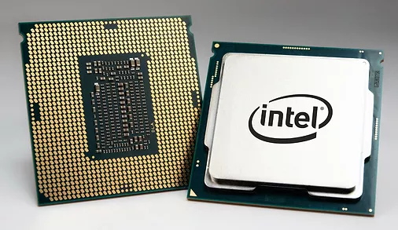

PROCESADORES
¿Qué es?
La CPU o un procesador. Como bien indican sus siglas en inglés (Central Processing Unit) es la unidad de procesamiento encargada de interpretar las instrucciones de un hardware haciendo uso de distintas operaciones aritméticas y matemáticas. Para entenderlo mejor, son como el cerebro de un ordenador, capaces de leer e interpretar las señales que les manda el usuario a través de los distintos componentes y resto de aplicaciones. Todo ello en cuestión de nanosegundos y en código binario. También se encarga de generar información de salida en formato de vídeo a través de una pantalla o un monitor.
FUNCIONES
CARACTERÍSTICAS
A la hora de comprar una CPU, es importante fijarse en sus características técnicas. Desde un principio, es bastante posible que todo te suene a “chino” debido a que es una nomenclatura con tecnicismos bastante complejos. De todas formas, aquí os dejamos un breve resumen para que podáis hacer una compra más objetiva:
HISTORIA
El microprocesador surgió de la evolución de distintas tecnologías predecesoras, básicamente de la computación y de la tecnología de semiconductores. El inicio de esta última data de mitad de la década de 1950; estas tecnologías se fusionaron a principios de los años 1970, produciendo el primer microprocesador. Dichas tecnologías iniciaron su desarrollo a partir de la segunda guerra mundial; en este tiempo los científicos desarrollaron computadoras específicas para aplicaciones militares.
En la prehistoria de la informática sólo unos pocos cientos de personas en todo el mundo tenían las aptitudes necesarias para ponerse a los mandos de los ordenadores de la época. Allá por los años 50 y 60, los computadores eran máquinas que ocupaban varias habitaciones e incluso necesitaban de múltiples operarios para funcionar correctamente. Apenas trabajaban para grandes universidades o ejércitos y eran completamente desconocidas en los hogares.